Good company.
Great games.
A first major slice: find a game that fits the room, understand a round, and play together with the devices you actually have. Existing content and multiplayer engines stay available.
From a game inventory to an invitation
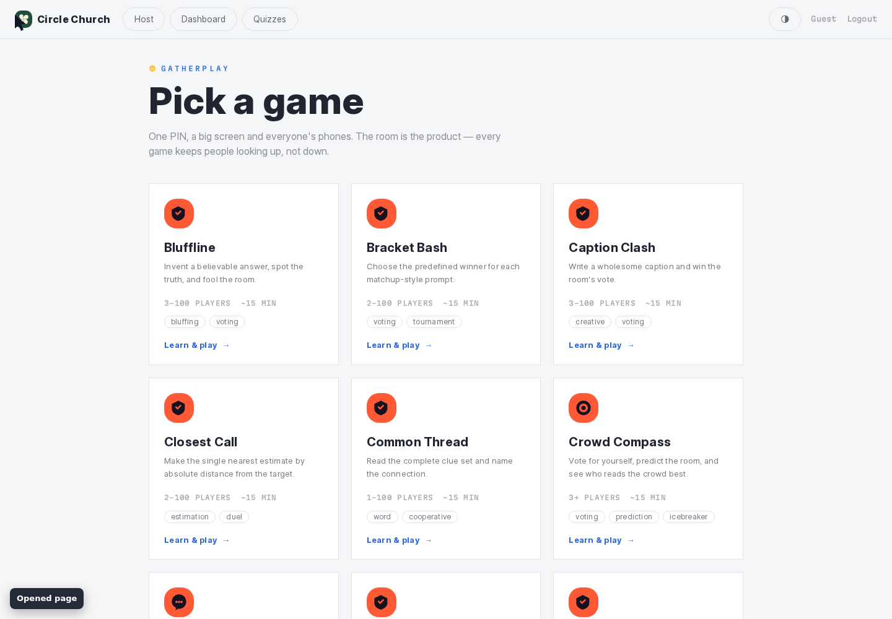
Before · 25 equal-weight formats, church branding and guest Logout.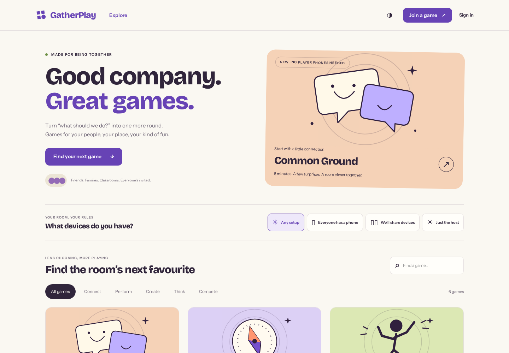
After · independent identity, curated collection, devices and activity facets.Understand it before you host it
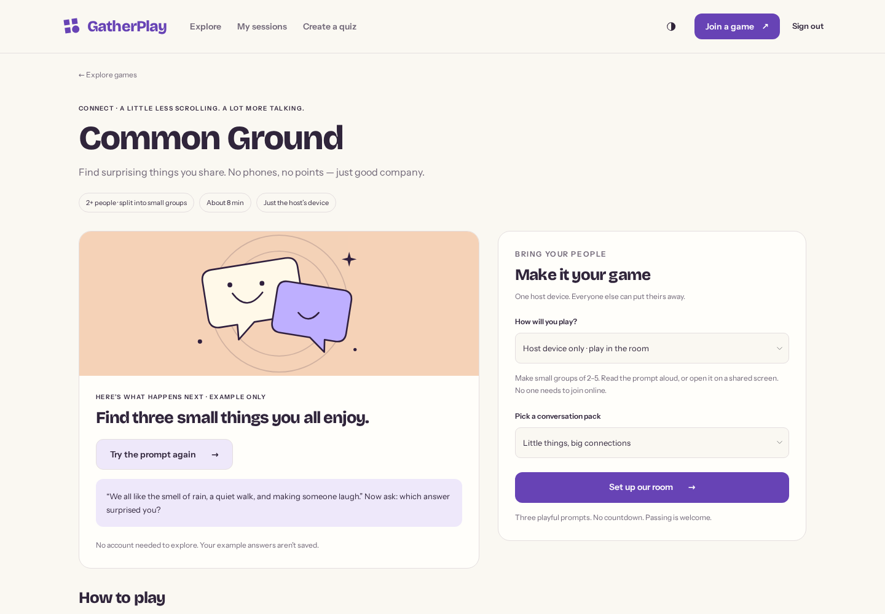
An example round beside a concrete pack and participation choice. No timer or digital roster for a conversation game.
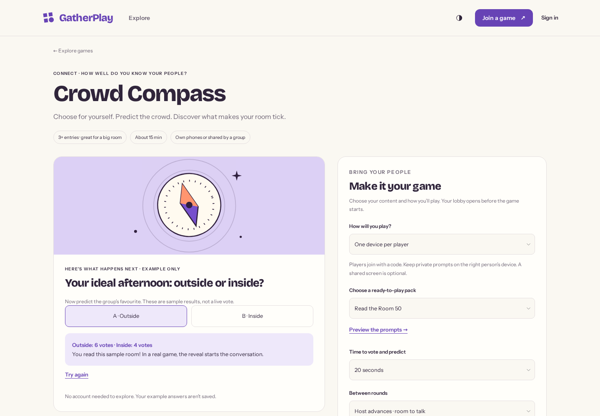
Existing networked games get clearer explanations and appropriate setup.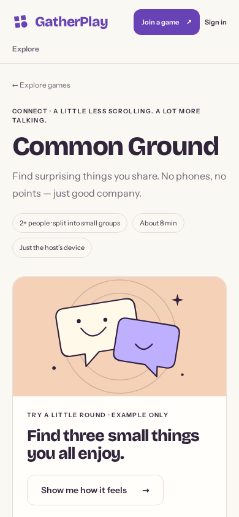
Phone layout · readable, stacked decisions.Design for the room
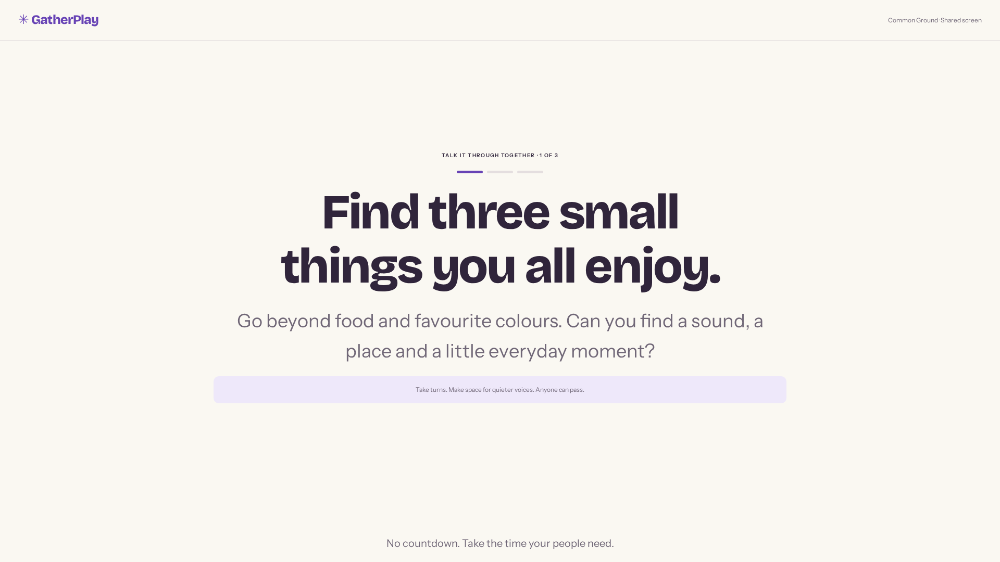
One clear prompt, manual pacing, no participant phones. The host controls the pace on a separate screen.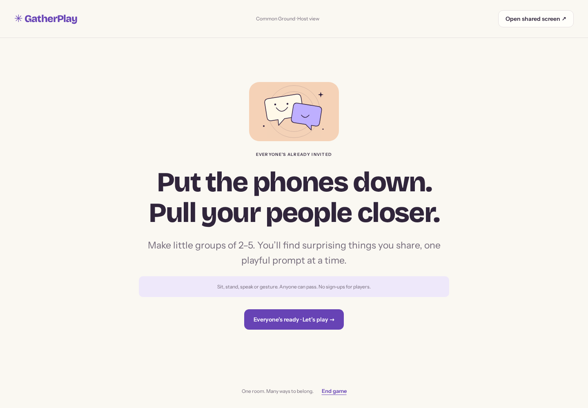
Set the room up before beginning.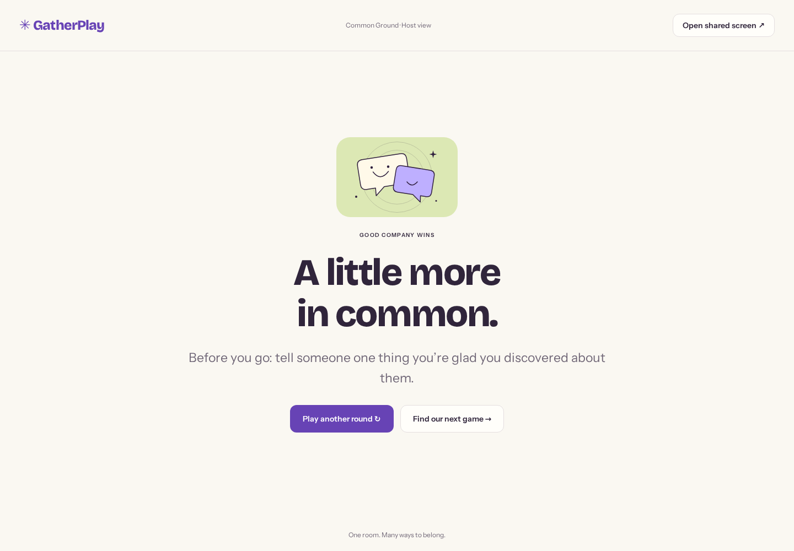
Celebrate a connection, then replay or choose another game.A real working session
Recorded in the running application: authenticated host, three conversation rounds, connection interruption and recovery, completion and replay. Spoken participation is represented by the facilitator's actions; no real participants were recorded.
Independent, and at home in context
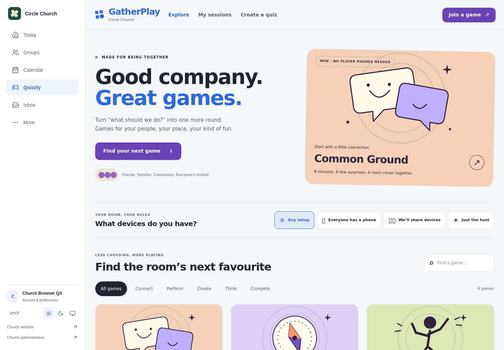
The actual authenticated CMS Games tab, using the existing appearance contract.
From joining to a real finish
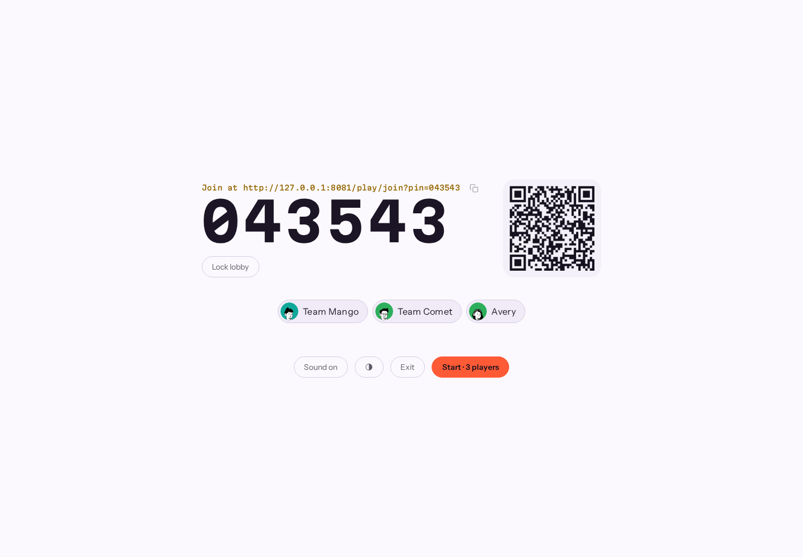
Three isolated guest controllers: two collective entries and an individual.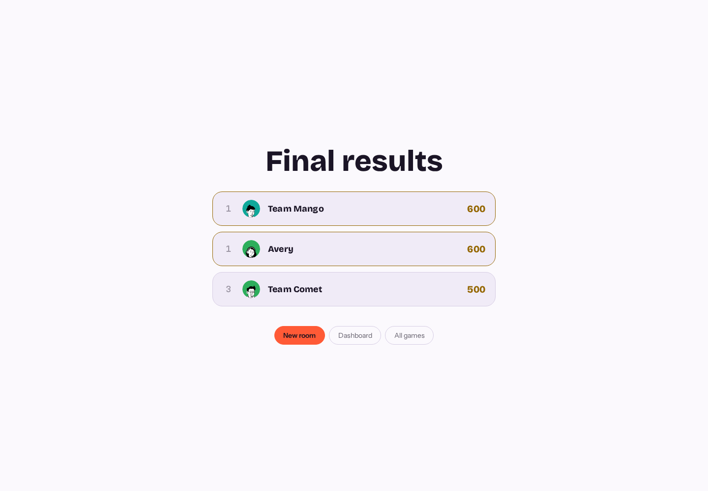
Real votes and predictions, persisted scores, and final results verified on host, players and projector.Verified foundations
19 browser checks cover discovery, guest authorization, mobile, cooperative sessions, recovery, shared screen, three isolated Crowd Compass guest controllers, voting, prediction, scoring and actual embedding. Eight focused Python tests and a real Frappe/Redis integration check pass. Production build passes.
Not claimed: 100-controller capacity, complete offline support, full assistive-technology certification, separate household identities, or a redesign of all existing game engines. The product direction names the next work explicitly.